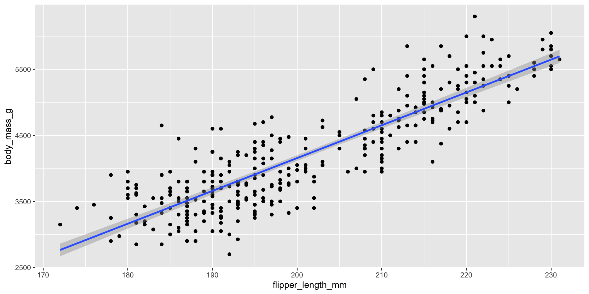

MATH167R: Overview
Course information
| Instructor | Peter Gao |
|---|---|
| Lectures | MW 10:30-11:45am in MH234 |
| Office Hours | MW 1:30-2:30pm in MH311 or email for an appointment |
peter.gao [at sjsu] Feel free to send me a reminder after 48 hours have passed. Please include [MATH 167R] in your subject line. |
Learning objectives
Upon successful completion of this course, students will be able to:
- Understand the structures of R objects
- Import data from a variety of sources.
- Save data in formats that can be used by other programs.
- Create publication quality graphs.
- Download and install packages.
- Create reusable functions.
- Perform statistical analysis on R.
Learning objectives
In this class we will discuss some basic computer science concepts, but we will emphasize tools for data analysis.
Advances in computation have enabled advances at every step of the data analysis pipeline:
Data collection, storage, and sharing
Exploratory data analysis and visualization
Statistical inference and prediction
Simulation
Communication and distribution of results
Where to look
Course website: Course slides, assignment instructions.
Canvas: Official syllabus, submitting assignments, receiving grades, data
Piazza: Discussion board
If you ever have questions about accessing materials, please contact me. If you need any kind of accommodations, please let me know as soon as possible.
What you need
Access to a computer with R and RStudio: the computer lab in MacQuarrie Hall 221 contains computers with all of the software that will be used during the semester.
All of the coursework may be completed on a personal computer and the software is freely available to students.
Course structure
Your final grade will be calculated as follows:
15%: Check-ins
30%: Labs
15%: Midterm exam
20%: Final exam
20%: Class project
Assignments
Check-ins: On most Mondays, you will be assigned short check-in assignments. These are designed to be completed during lab or shortly after and will be due at the start of the next class. At the end of the quarter, your lowest check-in grade will be dropped. They will be graded on the following two point scale:
0: indicates incomplete or unacceptable work
1: effort towards completing at least 75% of the assignment
2: effort towards completing the entire assignment.
Assignments
- Labs: On most Wednesdays, you will be assigned Labs. These are extended, more complicated assignments that you will likely not be able to complete during class. They will typically be due the next Wednesday.
Assignments
Midterm and Final Exams: There will be one in-person midterm during the semester and one final exam during finals week. Practice questions will be provided in advance of the exams.
Class Project: During the semester, you will complete a class project that requires you to apply the data manipulation, visualization, and analysis skills covered in this course to a real-world dataset of your choice.
Late policy
In general, the late policy is as follows:
Any assignment that is received late but less than 24 hours late will receive a grade penalty of 25%.
Any assignment that is received 24–48 hours late will receive a grade penalty of 50%.
Assignments will not be accepted more than 48 hours late.
Collaboration
You may discuss problems, approaches, and solutions with your classmates.
You must credit anyone with whom you worked on each assignment.
All submitted work must be your own; you should not submit code or answers copied from any resource including your classmates.
If you have any questions, ask!
ChatGPT (and other tools)…
Students are encouraged to use online resources including large language model-based chatbots (ex. ChatGPT) as aids for learning and understanding course material.
However, the use of external resources like ChatGPT to generate code or answers for course assignments, exams, and projects is not permitted.
Discussion
Piazza discussion forum: post questions about assignments and answer questions from other students.
Posts may not include substantial amounts of code that can be used for a solution to any problem, but may include code snippets.
- Worth up to 2% extra credit on your final grade!
Discussion
Bad questions:
How do you do problem 2?
Here’s my code and it’s broken. How do I fix it?
Good questions:
Here’s a snippet of code I used for problem 2:
code snippet
It returned the following error:
error message
Does anyone know why? I already tried...I don’t understand the concept from Slide 18 today. Could anyone elaborate on why...
Office Hours (aka drop-in hours)
| In-person | MH 311 Monday and Wednesday 12:30 to 1:30pm or by appointment (email) |
| Zoom | By appointment |
Come by:
- for a snack
- to ask questions or work with other students
- just to chat!
My advice: make it a habit to drop by office hours, starting early in the semester when schedules are less busy.
Lecture slides
Slides will usually be posted on the course website before class. I encourage you to return to the slides after class and make sure you understand the code used and the concepts covered.
Generally speaking, code will be contained in blocks that look like this:
Getting to know each other
Form groups of 2-3 and discuss the following:
Introduce yourself (names, major/program)
What are you excited/nervous/confused about with regards to this course? What questions do you have?
Have you ever used R? Programmed?
What is one area of interest you would like to use statistics/data science to study?
Introduction to R
What is R?

R is a programming language designed for statistical analysis.
open-source
free
large and active community of developers and users
great analysis tools
great visualization tools
Why R?
In this class we will cover programming through the use of the R language, emphasizing statistical computing skills.
Advances in computation have enabled advances at every step of the data analysis pipeline:
- Data collection, storage, and sharing
- Exploratory data analysis and visualization
- Statistical inference and prediction
- Communication and distribution of results
R is a programming language tailored to these tasks.
What is RStudio?
RStudio is an integrated development environment (IDE) designed to make your life easier.
Organizes scripts, files, plots, code console, ...
Highlights syntax
Helpful interactive graphical interface
Will make an efficient, reproducible workflow much easier
A tour through R and RStudio
By default…
- Top left: Editor pane. Browse and edit scripts and data with tabs
- Top right: List of objects in your Environment (recall
ls()), code History - Bottom left: Console for running R code line-by-line (
>prompt) - Bottom right: Files, plots, packages, help files
RStudio + R: A fancy calculator
RStudio + R: A fancy calculator
R can usually handle bigger numbers than your handheld calculator, but even R has limits:
Assignment
R can also store values (like numbers) as objects, which can be referenced later:
A tricky calculator
What do you expect the output to be?
[1] 8[1] 8A tricky calculator
When we assign y <- x + 1, we essentially create a copy of x. As a result, when we reassign x <- 0, y is not affected.
This isn’t necessarily “right” or “wrong”– this is just how R works! R is full of these little subtleties that you need to be able to grasp in order to write functional code.
More than a fancy calculator
Of course, we wouldn’t have a whole course on R if this was all it could do.
Data analysis
Visualization
Communication
R Markdown files (see examples here)
- Combine code, output, and writing
- Self-contained analyses
- Creates HTML, PDF, slides (like these!), webpages, …
Installing R and RStudio
Your first check-in
On the computer you are using, create a new folder titled “MATH167R” or something similar.
Within this folder, create a sub-folder named “checkins” or something similar.
Download “01_first-R-code.R” and save it in your checkins folder.
Open “01_first-R-code.R” in RStudio. It should look something like the code below.
Your first check-in
Run the code line by line and answer the two questions on the Check-in 1 assignment on Canvas.
For complete credit for Check-in 1, please also complete the pre-course survey and NameCoach recording.
If you would like to find others to work with, please also reply to the Piazza post.